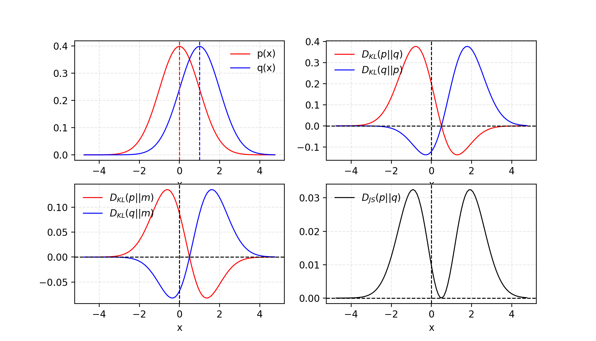
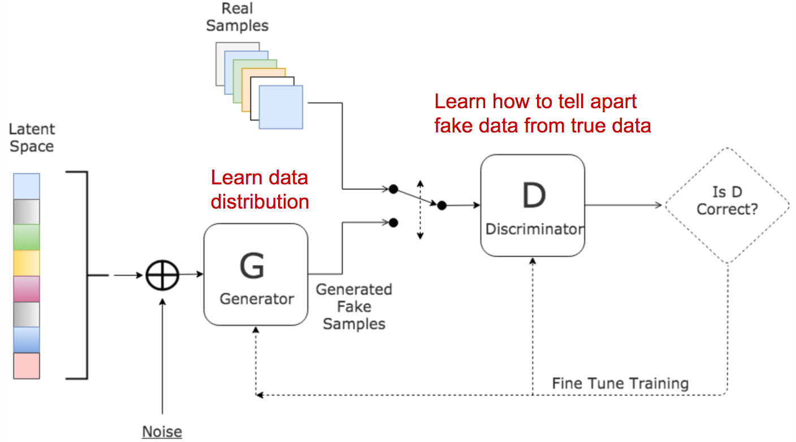
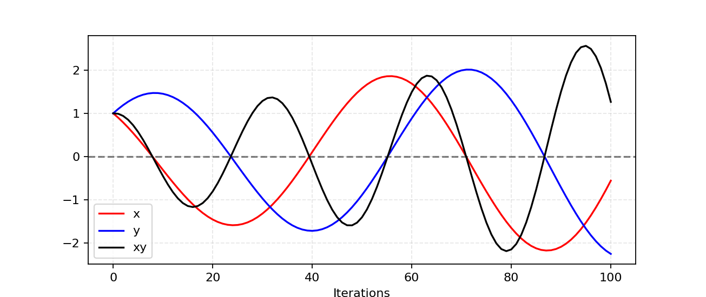
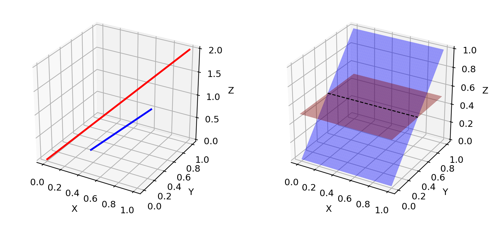
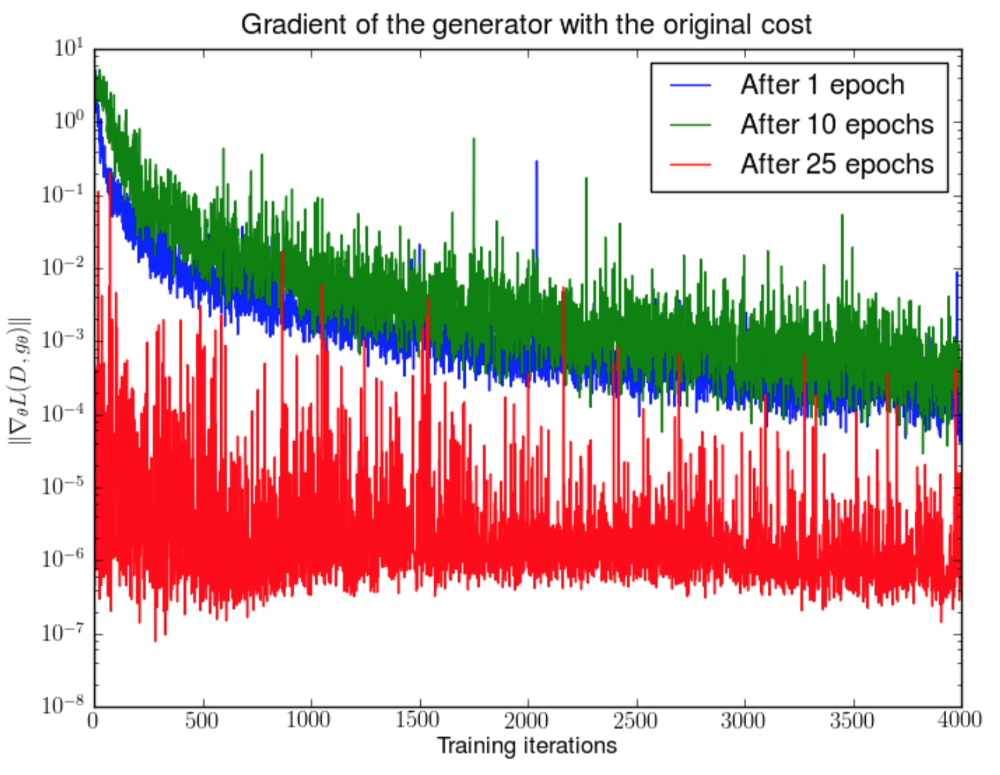
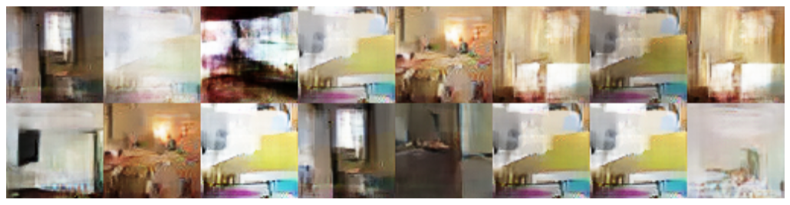
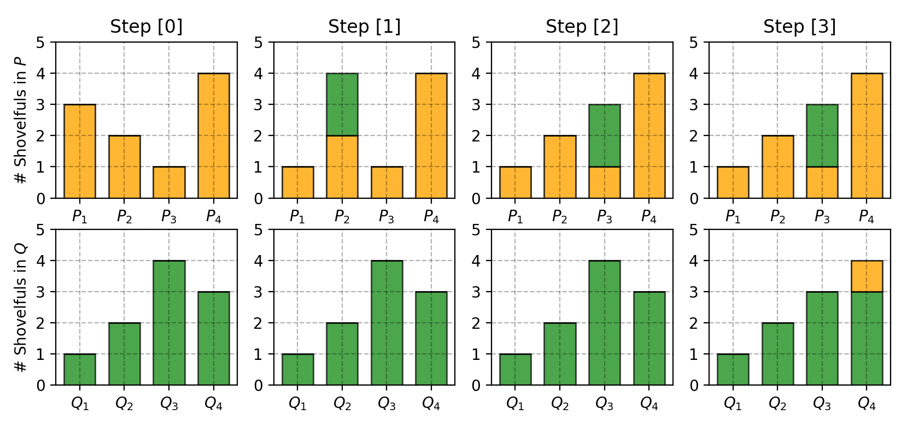
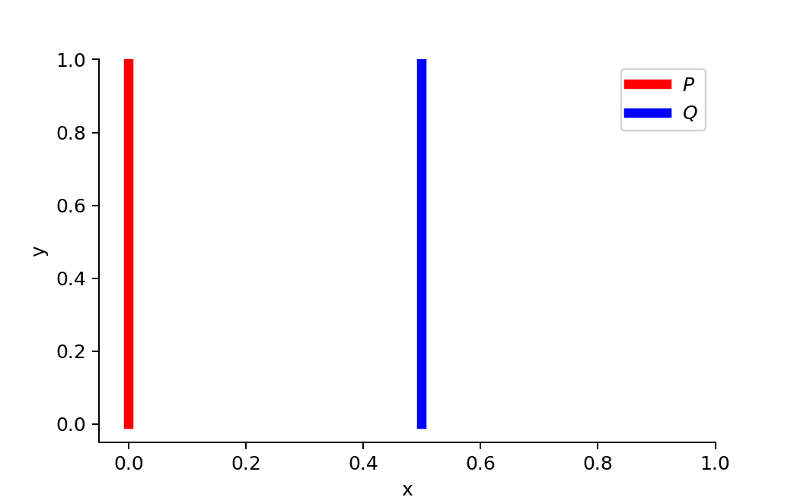
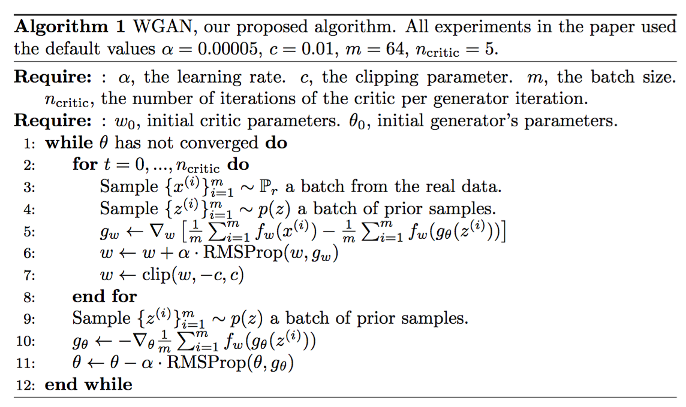
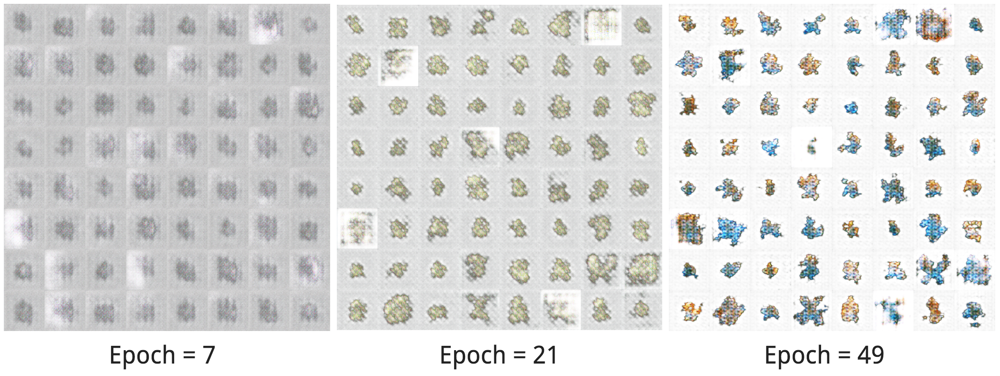

目录
[2018-09-30 更新：感谢 Yoonju，我们的这篇文章已被翻译成韩文！] [2019-04-18 更新：本文也已发布在arXiv上。]
生成对抗网络（GAN）在许多生成任务中取得了极佳效果，能够复制现实世界中丰富的内容，如图像、人类语言和音乐。其灵感来源于博弈论：生成器和判别器两个模型相互竞争，同时也让彼此变得更强。然而，训练 GAN 模型相当具有挑战性，人们经常面临训练不稳定或无法收敛的问题。
在这里我想解释生成对抗网络框架背后的数学原理，为什么它难以训练，以及最后介绍一种改进版本的 GAN，旨在解决训练困难。
Kullback–Leibler 与 Jensen–Shannon 散度
在深入研究 GAN 之前，我们先回顾两个用于量化两个概率分布相似性的度量。
(1) KL（Kullback–Leibler）散度衡量一个概率分布p相对于另一个期望概率分布q的差异程度。
当p(x)处处等于q(x)时，D_{KL}达到最小值零。
从公式可以看出 KL 散度是不对称的。当p(x)接近零而q(x)显著不为零时，q的影响会被忽略。如果我们只是想衡量两个同等重要的分布之间的相似性，这可能会导致错误的结果。
(2) Jensen–Shannon 散度是另一种衡量两个概率分布相似性的指标，其值被限制在[0, 1]范围内。JS 散度是对称的（太好了！）且更加平滑。如果你对 KL 散度与 JS 散度的比较感兴趣，可以查看这个Quora 帖子。

有人认为（Huszar, 2015），GAN 取得巨大成功的原因之一，是将传统最大似然方法中不对称的 KL 散度换成了对称的 JS 散度。我们将在下一节详细讨论这一点。
生成对抗网络 (GAN)
GAN 由两个模型组成：

这两个模型在训练过程中相互对抗：生成器G努力欺骗判别器，而判别器D则努力不被欺骗。这种有趣的零和博弈促使两个模型不断提升自身能力。
给定，
| Symbol | Meaning | Notes |
|---|---|---|
| p_{z} | Data distribution over noise input z | Usually, just uniform. |
| p_{g} | The generator’s distribution over data x | |
| p_{r} | Data distribution over real sample x |
一方面，我们希望通过最大化\mathbb{E}_{x \sim p_{r}(x)} [\log D(x)]来确保判别器D对真实数据的判断准确。同时，对于假样本G(z), z \sim p_z(z)，我们期望判别器输出的概率D(G(z))接近零，即通过最大化\mathbb{E}_{z \sim p_{z}(z)} [\log (1 - D(G(z)))]来实现。
另一方面，生成器被训练来提高D对假样本给出高概率的可能性，从而最小化\mathbb{E}_{z \sim p_{z}(z)} [\log (1 - D(G(z)))]。
将两方面结合起来，D和G在进行极小化极大博弈，我们需要优化以下损失函数：
（在梯度下降更新过程中，\mathbb{E}_{x \sim p_{r}(x)} [\log D(x)]对G没有影响。）
判别器 D 的最优值是多少？
现在我们有了一个定义明确的损失函数。首先让我们看看D的最佳取值是什么。
由于我们关心的是能最大化L(G, D)的D(x)的最佳值，让我们将其记为
然后积分内部（我们可以安全地忽略积分，因为x是对所有可能值采样的）是：
因此，令\frac{d f(\tilde{x})}{d \tilde{x}} = 0，我们得到判别器的最优值：D^*(x) = \tilde{x}^* = \frac{A}{A + B} = \frac{p_{r}(x)}{p_{r}(x) + p_g(x)} \in [0, 1]。
一旦生成器被训练到最优，p_g会非常接近p_{r}。当p_g = p_{r}时，D^*(x)变为1/2。
全局最优是什么？
当G和D都处于最优值时，我们有p_g = p_{r}和D^*(x) = 1/2，此时损失函数变为：
损失函数代表什么？
根据列出的公式，p_{r}和p_g之间的 JS 散度可以计算为：从 GAN 到 WGAN
因此，
本质上，当判别器最优时，GAN 的损失函数通过 JS 散度量化了生成数据分布p_g与真实样本分布p_{r}之间的相似性。能够复现真实数据分布的最佳G^*会带来最小的L(G^*, D^*) = -2\log2，这与上面的公式一致。
GAN 的其他变体：在不同场景或为不同任务设计的 GAN 有许多变体。例如，在半监督学习中，一个想法是更新判别器，使其输出真实的类别标签1, \dots, K-1以及一个假的类别标签K。生成器模型的目标是欺骗判别器，使其输出的分类标签小于K。
Tensorflow 实现：carpedm20/DCGAN-tensorflow
GAN 的问题
虽然 GAN 在生成逼真图像方面取得了巨大成功，但训练并不容易；其过程通常缓慢且不稳定。
难以达到纳什均衡
Salimans et al. (2016)讨论了基于梯度下降的 GAN 训练过程存在的问题。两个模型被同时训练，以找到一个两人非合作博弈的纳什均衡。然而，每个模型都独立更新自己的代价函数，而不考虑博弈中的另一个参与者。同时更新两个模型的梯度无法保证收敛。
让我们通过一个简单例子来更好地理解为什么在非合作博弈中难以找到纳什均衡。假设一个玩家控制x以最小化f_1(x) = xy，同时另一个玩家不断更新y以最小化f_2(y) = -xy。

因为\frac{\partial f_1}{\partial x} = y和\frac{\partial f_2}{\partial y} = -x，我们在一个迭代中同时用x-\eta \cdot y更新x，用y+ \eta \cdot x更新y，其中\eta是学习率。一旦x和y符号不同，后续的每次梯度更新都会导致剧烈振荡，而且不稳定性会随着时间恶化，如图所示。 更新x以最小化xy、更新y以最小化-xy的模拟示例。学习率\eta = 0.1。随着迭代次数增加，振荡会越来越不稳定。
低维支撑集
| Term | Explanation |
|---|---|
| Manifold | A topological space that locally resembles Euclidean space near each point. Precisely, when this Euclidean space is of dimension n, the manifold is referred as n-manifold. |
| Support | A real-valued function f is the subset of the domain containing those elements which are not mapped to zero. |
Arjovsky and Bottou (2017)在一篇非常理论化的论文“Towards principled methods for training generative adversarial networks”中深入讨论了p_r和p_g的支撑集位于低维流形上，以及这如何导致 GAN 训练不稳定的问题。
许多现实世界数据集的维度（用p_r表示）看起来只是人为地很高。实际上它们都集中在较低维的流形上。这其实是流形学习的基本假设。想想现实世界的图像，一旦主题或包含的对象确定，图像就会受到很多限制，比如狗应该有两只耳朵和一条尾巴，摩天大楼应该有笔直高大的身躯等等。这些限制使得图像不可能呈现高维的自由形态。
p_g也位于低维流形上。当要求生成器根据很小的维度（如 100 维）的噪声变量输入z生成 64x64 这样的大图像时，这 4096 个像素上的颜色分布已被 100 维的随机向量所限定，几乎不可能填满整个高维空间。
由于p_g和p_r都位于低维流形上，它们几乎肯定是不相交的（见图 4）。当支撑集不相交时，我们总是能找到一个完美的判别器，以 100% 的准确率区分真假样本。如果你对证明感兴趣，可以查看这篇论文。

梯度消失
当判别器完美时，我们保证有D(x) = 1, \forall x \in p_r和D(x) = 0, \forall x \in p_g。因此损失函数L下降到零，我们在学习迭代中没有梯度可以用来更新损失。图 5 展示了一个实验：当判别器变好时，梯度会迅速消失。

结果，训练 GAN 面临一个两难境地：
这个两难困境显然会让 GAN 的训练变得非常困难。
模式崩溃
在训练过程中，生成器可能会崩溃到一个总是产生相同输出的状态。这是 GAN 的常见失败案例，通常被称为模式崩溃。即使生成器能够骗过对应的判别器，它也未能学会表示复杂的现实世界数据分布，而是被困在一个多样性极低的小空间里。

缺乏合适的评估指标
生成对抗网络天生没有一个好的目标函数来告知我们训练进展。没有好的评估指标，就如同在黑暗中工作。没有好的信号告诉你何时停止；也没有好的指标来比较多个模型的性能。
改进 GAN 训练
以下建议被提出，用于帮助稳定和改进 GAN 的训练。
前五种方法是实现 GAN 训练更快收敛的实用技巧，提出于“Improve Techniques for Training GANs”。 最后两种方法提出于“Towards principled methods for training generative adversarial networks”，用于解决分布不相交的问题。
(1) 特征匹配
特征匹配建议优化判别器，使其检查生成器的输出是否匹配真实样本的期望统计量。在这种情况下，新的损失函数定义为| \mathbb{E}_{x \sim p_r} f(x) - \mathbb{E}_{z \sim p_z(z)}f(G(z)) |_2^2 ，其中f(x)可以是任何特征统计量的计算，例如均值或中位数。
(2) 小批量判别
通过小批量判别，判别器能够消化一个批次中训练数据点之间的关系，而不是独立处理每个点。
在一个小批量中，我们近似每对样本之间的 closenessc(x_i, x_j)，并通过对同一个批次中其他样本的 closeness 求和来获得一个数据点的整体摘要o(x_i) = \sum_{j} c(x_i, x_j)。然后将o(x_i)显式添加到模型的输入中。
(3) 历史平均
对于两个模型，都将 | \Theta - \frac{1}{t} \sum_{i=1}^t \Theta_i |^2 加入损失函数，其中\Theta是模型参数，\Theta_i是该参数在过去训练时刻i的配置。这个额外项会在\Theta随时间变化过于剧烈时惩罚训练速度。
(4) 单侧标签平滑
在向判别器提供标签时，不再使用 1 和 0，而是使用柔化值如 0.9 和 0.1。实验表明这能降低网络的脆弱性。
(5) 虚拟批量归一化 (VBN)
每个数据样本基于一个固定的批次（“参考批次”）进行归一化，而不是在其自身的小批量内。参考批次在训练开始时选定，并在整个训练过程中保持不变。
Theano 实现：openai/improved-gan
(6) 添加噪声
根据的讨论，我们现在知道p_r和p_g在高维空间中是不相交的，这导致了梯度消失问题。为了人为地“扩散”分布并增加两个概率分布发生重叠的机会，一个解决方案是在判别器D的输入上添加连续噪声。从 GAN 到 WGAN
(7) 使用更好的分布相似性度量
原始 GAN 的损失函数衡量p_r和p_g分布之间的 JS 散度。当两个分布不相交时，这个度量无法提供有意义的值。
Wasserstein 度量被提出来替代 JS 散度，因为它拥有更加平滑的值空间。详情见下一节。
Wasserstein GAN (WGAN)
什么是 Wasserstein 距离？
Wasserstein 距离是衡量两个概率分布之间距离的指标。 它也被称为 Earth Mover’s 距离，简称 EM 距离，因为从非正式意义上讲，它可以理解为将一堆形状为一种概率分布的“泥土”搬运并变换成另一种分布形状所需的最小能量成本。成本由以下量化：搬运泥土的数量乘以搬运距离。
我们先看一个概率域是离散的简单情况。例如，假设我们有两个分布P和Q，每个都有四堆泥土，总共十铲泥土。每堆泥土的铲数分配如下：
为了将P变成Q的样子，如图 7 所示，我们需要：
如果我们把让P_i和Q_i匹配所需支付的成本记为\delta_i，那么我们有\delta_{i+1} = \delta_i + P_i - Q_i，在本例中为：
最终 Earth Mover’s 距离为W = \sum \vert \delta_i \vert = 5。

当处理连续概率域时，距离公式变为：
在上面的公式中，\Pi(p_r, p_g)是p_r和p_g之间所有可能的联合概率分布的集合。一个联合分布\gamma \in \Pi(p_r, p_g)描述了一种泥土搬运方案，与上面离散例子相同，但在连续概率空间中。具体来说\gamma(x, y)表示应该从点x到点y搬运百分之多少的泥土，才能使x遵循与y相同的概率分布。这就是为什么x上的边缘分布加起来等于p_g、\sum_{x} \gamma(x, y) = p_g(y)（一旦我们完成从每个可能的x搬运计划数量的泥土到目标y，最终得到的结果正好是y根据p_g所拥有的分布），反之亦然\sum_{y} \gamma(x, y) = p_r(x)。
将x视为起点、y视为终点时，搬运泥土的总量是\gamma(x, y)，旅行距离是| x-y |，因此成本是\gamma(x, y) \cdot | x-y |。对所有(x,y)对取平均的期望成本可以很容易地计算为：
最后，我们在所有搬运方案的成本中取最小的一个作为 EM 距离。在 Wasserstein 距离的定义中，\inf（下确界，也称为最大下界）表示我们只对最小的成本感兴趣。
为什么 Wasserstein 比 JS 或 KL 散度更好？
即使两个分布位于没有重叠的低维流形上，Wasserstein 距离仍然能提供有意义且平滑的距离表示。
WGAN 论文用一个简单例子说明了这个想法。
假设我们有两个概率分布P和Q：

当\theta \neq 0时：
但当\theta = 0时，两个分布完全重叠：
D_{KL}在两个分布不相交时给出无穷大。D_{JS}的值会发生突变，在\theta = 0处不可导。只有 Wasserstein 度量能提供平滑的度量，这对使用梯度下降进行稳定学习过程非常有帮助。
将 Wasserstein 距离用作 GAN 的损失函数
穷举\Pi(p_r, p_g)中所有可能的联合分布来计算\inf_{\gamma \sim \Pi(p_r, p_g)}是不可行的。因此作者基于 Kantorovich-Rubinstein 对偶性提出了一种巧妙的公式变换：
其中\sup（上确界）是inf（下确界）的对立面；我们想要度量最小上界，或者用更简单的话说，就是最大值。
Lipschitz 连续性？
新形式 Wasserstein 度量中的函数f被要求满足| f |_L \leq K，即它应该是K-Lipschitz 连续的。
一个实值函数f: \mathbb{R} \rightarrow \mathbb{R}被称为K-Lipschitz 连续，如果存在一个实常数K \geq 0，使得对所有x_1, x_2 \in \mathbb{R}，
这里K被称为函数f(.)的 Lipschitz 常数。处处连续可导的函数是 Lipschitz 连续的，因为导数估计为\frac{\lvert f(x_1) - f(x_2) \rvert}{\lvert x_1 - x_2 \rvert}是有界的。然而，一个 Lipschitz 连续的函数可能并非处处可导，例如f(x) = \lvert x \rvert。
解释 Wasserstein 距离公式如何变换本身就值得写一篇长文，所以这里我跳过细节。如果你对如何用线性规划计算 Wasserstein 度量，或者如何根据 Kantorovich-Rubinstein 对偶性将其转化为对偶形式感兴趣，可以阅读这篇精彩文章。
假设这个函数f来自一族 K-Lipschitz 连续函数\{ f_w \}_{w \in W}，由w参数化。在改进的 Wasserstein-GAN 中，“判别器”模型被用来学习w以找到一个好的f_w，损失函数被配置为衡量p_r和p_g之间的 Wasserstein 距离。
因此，“判别器”不再是直接判断假样本与真样本的评审者。相反，它被训练来学习一个K-Lipschitz 连续函数，以帮助计算 Wasserstein 距离。随着训练中损失函数的下降，Wasserstein 距离变小，生成器模型的输出越来越接近真实数据分布。
一个重大问题是需要在训练过程中保持K的f_w的 Lipschitz 连续性，以确保一切正常运行。论文提出一个简单但非常实用的技巧：在每次梯度更新后，将权重w裁剪到一个很小的窗口，例如[-0.01, 0.01]，从而得到一个紧凑的参数空间W，这样f_w就获得了其下界和上界，以保持 Lipschitz 连续性。

与原始 GAN 算法相比，WGAN 进行了以下改动：
遗憾的是，Wasserstein GAN 并不完美。即使是原始 WGAN 论文的作者也提到“权重裁剪显然是一种糟糕的强制执行 Lipschitz 约束的方式”（哎呀！）。WGAN 仍然会遇到训练不稳定、权重裁剪后收敛缓慢（当裁剪窗口太大时），以及梯度消失（当裁剪窗口太小时）的问题。
一些改进，特别是用梯度惩罚代替权重裁剪，已在Gulrajani et al. 2017中讨论。我将把它留到以后的文章中。
示例：生成新的宝可梦！
纯属娱乐，我在一个很小的数据集上尝试了carpedm20/DCGAN-tensorflow，该数据集是宝可梦精灵图。数据集只有大约 900 张宝可梦图像，包括同一物种的不同形态。
让我们看看模型能够创造出什么类型的新宝可梦。 可惜由于训练数据太少，新宝可梦只有粗略的形状而没有细节。随着训练 epoch 增加，形状和颜色看起来确实更好！耶！

如果你对carpedm20/DCGAN-tensorflow的带注释版本以及如何修改它来训练 WGAN 和带梯度惩罚的 WGAN 感兴趣，可以查看lilianweng/unified-gan-tensorflow。
引用方式：
@article{weng2017gan,
title = "From GAN to WGAN",
author = "Weng, Lilian",
journal = "lilianweng.github.io",
year = "2017",
url = "https://lilianweng.github.io/posts/2017-08-20-gan/"
}
@misc{weng2019gan,
title={From GAN to WGAN},
author={Lilian Weng},
year={2019},
eprint={1904.08994},
archivePrefix={arXiv},
primaryClass={cs.LG}
}
参考文献
[1] Goodfellow, Ian, et al. “Generative adversarial nets.” NIPS, 2014.
[2] Tim Salimans, et al. “Improved techniques for training gans.” NIPS 2016.
[3] Martin Arjovsky and Léon Bottou. “Towards principled methods for training generative adversarial networks.” arXiv preprint arXiv:1701.04862 (2017).
[4] Martin Arjovsky, Soumith Chintala, and Léon Bottou. “Wasserstein GAN.” arXiv preprint arXiv:1701.07875 (2017).
[5] Ishaan Gulrajani, Faruk Ahmed, Martin Arjovsky, Vincent Dumoulin, Aaron Courville. Improved training of wasserstein gans. arXiv preprint arXiv:1704.00028 (2017).
[6] Computing the Earth Mover’s Distance under Transformations
[7] Wasserstein GAN and the Kantorovich-Rubinstein Duality
[8] zhuanlan.zhihu.com/p/25071913
[9] Ferenc Huszár. “How (not) to Train your Generative Model: Scheduled Sampling, Likelihood, Adversary?.” arXiv preprint arXiv:1511.05101 (2015).